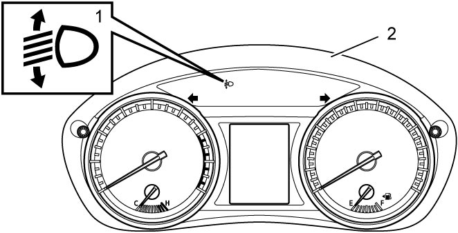

9B
| Headlight Auto Leveling System Description (LED Headlight Model) |
•The headlight auto leveling system consists of the headlight auto leveling control module, headlight leveling actuator, rear vehicle height sensor, lighting switch and combination meter.
•When the ignition is “ON”, the headlight auto leveling control module monitors the vehicle position based on the signals from the rear vehicle height sensor linked to the rear suspension.
•The headlight auto leveling control module communicates with other control modules through CAN communication line.
For more details of CAN communication, refer to “Communication System Description” in Section 10H.
•When the ignition is “ON”, the headlight auto leveling control module monitors the vehicle position based on the signals from the rear vehicle height sensor linked to the rear suspension.
•The headlight auto leveling control module communicates with other control modules through CAN communication line.
For more details of CAN communication, refer to “Communication System Description” in Section 10H.
—M16A model:  .
.
—D16AA model: .
—D16AA model:
Headlight Auto Leveling Control
Auto leveling control when vehicle is stopped
When the same vehicle height is maintained for a specified time after the vehicle height is changed and the headlights are on, the headlight auto leveling control module drives the headlight leveling actuators to maintain the proper optical axis based on the vehicle height detected just before the headlights are on.
Auto leveling control when vehicle is in motion
When a constant speed drive at 30 km/h (19 mile/h) or higher on other than rough roads is detected for a specified time and the headlights are on, the headlight auto leveling control module drives the headlight leveling actuators to maintain the optical axis properly based on the vehicle height detected just before the headlights are on. When a change in the vehicle height is detected for a specified time, the headlight auto leveling control module judges that the vehicle is running in a rough road and stops the auto leveling control.
Headlight Auto Leveling System Initialization
In case the headlight auto leveling control module is replaced or rear vehicle height sensor is removed, reinstalled or replaced, the auto leveling system must be initialized.
Self-Diagnosis Function
When the headlight auto leveling control module detects an abnormal condition in the headlight auto leveling system, it causes the headlight auto leveling warning light (1) in the combination meter (2) to turn on.

 "Expand image")
Fail-Safe Function
When the headlight auto leveling control module detects an abnormal condition in the headlight auto leveling system, it initiates fail-safe control, stopping operation of headlight leveling actuators.